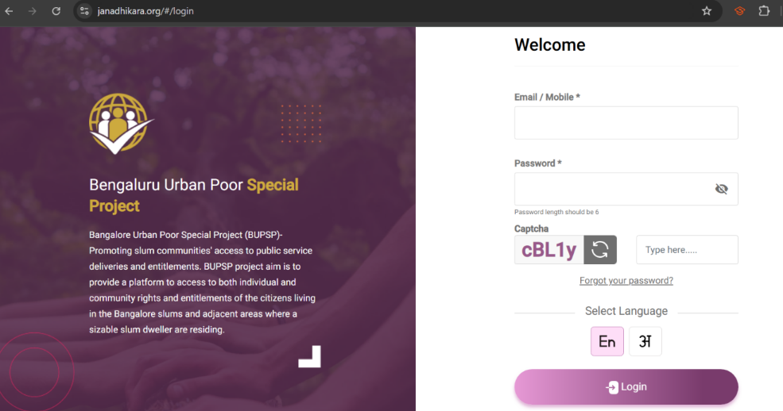
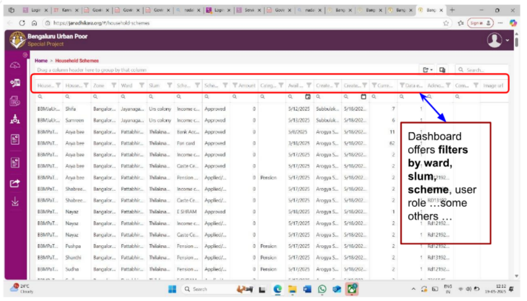
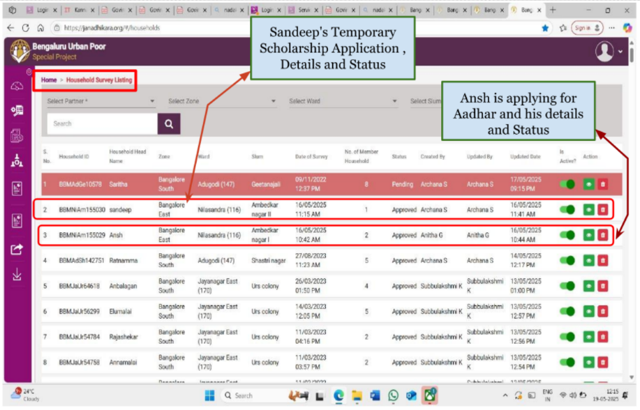
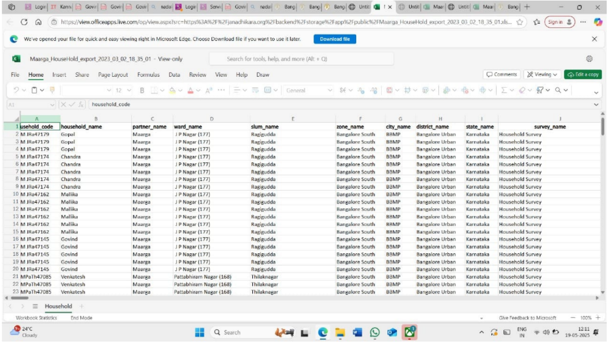

Who Holds the Data Holds the Power: A Day Inside Janadhikara's MIS System

Today marked a critical learning moment in our field immersion. We finally got to meet Priya, the MIS Coordinator at Janadhikara, whom we were supposed to meet the previous day. Due to her absence then, we rescheduled, and I'm so glad we did because what she shared with us opened up an entirely new dimension of understanding.
Priya's professional journey is both inspiring and insightful:
- Completed her B.Com in 2014
- Worked at Ujjwal Small Finance Bank until 2019
- Joined Maarga in 2021 and moved into the Janadhikara MIS role in 2023
- Now leads data coordination, verification, and analytics for thousands of slum households
Her job revolves around verifying data, approving survey submissions, managing the web dashboard, and facilitating communication between field teams and the central IT system.
What Does an MIS Coordinator Do?
Priya explained her responsibilities with clarity. Her work includes:
- Issuing unique login credentials to each CO for the BUPSP app
- Verifying, cleaning, and approving all survey data uploaded from the field
- Monitoring the daily performance and data upload targets of each CO
- Coordinating with the IT team at Azim Premji Foundation for tech updates or error handling
- Maintaining scheme wise tracking reports and saturation dashboards
- Designing weekly/monthly execution plans
- Handling the BUPSP web portal, which serves as the official online MIS for Janadhikara
Understanding the Janadhikara MIS System
The Janadhikara MIS platform is not just a tech tool it is a digital backbone for social service delivery in informal settlements. Here's a technical breakdown of what we learned:
Access and Structure
- The MIS portal can only be accessed by Priya and the Project Coordinators, using secured credentials.
- Community Organisers (COs) can input and update survey responses, but cannot edit the questions this maintains data integrity and prevents misuse.
- Survey data is structured household wise, with each family having a Unique ID tied to their demographics, entitlements, and document status.
Dashboard Features: Real Time Data Flow
- The dashboard offers filters by ward, slum, scheme, and user role.
- Priya can track the number of surveys done per day, status of scheme applications, and document uploads.
- Over 19,000 applications and 90,000 individuals have been registered in the system showing its wide reach and operational scale.

Scheme Management and Verification
Every household's data includes:
- Number of family members
- Scheme applications (Pensions, Ration, Scholarships, etc.)
- Status updates (Applying, Approved, Rejected, In Process)

Extraction and Backup
- The portal allows data export in Excel format (via an "Extraction" tool)
- No automated backup system Priya performs manual backups to protect against data loss
- Due to limited server capacity (only 2), the site occasionally slows down under heavy traffic.

Challenges & Suggestions
Despite its functionality, Priya highlighted three major pain points:
- Manual Updates: Survey responses are still manually updated and verified daily
- Server Limitations: Two servers often struggle under peak usage
- Backup Fragility: No real time auto backup, posing a risk of data loss
Her suggested improvements included:
- Automated daily sync and backup
- One click household lookup by unique ID
- Real time feedback system for COs
- A more intuitive dashboard layout for quick monitoring
Reflection: When Data Becomes a Tool for Justice
What stood out to me most was how data isn't just administrative it's political. Each entry in the BUPSP system represents a human being. A missed entry could mean no pension, an outdated status could block access to housing, and an unverified document might mean a child misses a scholarship. It reminded me that digital exclusion is the new form of social exclusion and roles like Priya's are critical to making sure technology becomes a bridge, not a barrier.
Priya doesn't just manage a system she ensures that data works for the people.
Whose Infrastructure Is This?
The platform was developed in collaboration with Azim Premji Foundation, but maintained locally. This decentralized model works only because field workers like Priya act as the glue between:
- Software teams
- Government portals
- Human lives in the slum
In that sense, Janadhikara is not just a tech project it is a public digital infrastructure, run by community, for community.
Final Thought: The Digital Nerve Center of a Rights-Based Movement
The Janadhikara MIS is more than just a dashboard it is the nerve center of a rights based, data driven movement. It sits quietly in the background while community organisers knock on doors, fill out forms, and hold hands during crisis. But without this backend system, none of those efforts would scale.
And that's what this visit taught me real change is never just on the surface. It lives in quiet roles, invisible data points, and people like Priya who keep the system not just working, but working for justice.
Note: All screenshots and field-based content in this post have been documented with the informed consent of the Community Organisers (COs) and Field Coordinators involved in the demonstration. These visuals are shared for academic and reflective learning purposes, and we remain committed to respecting the dignity, privacy, and efforts of those working at the grassroots.